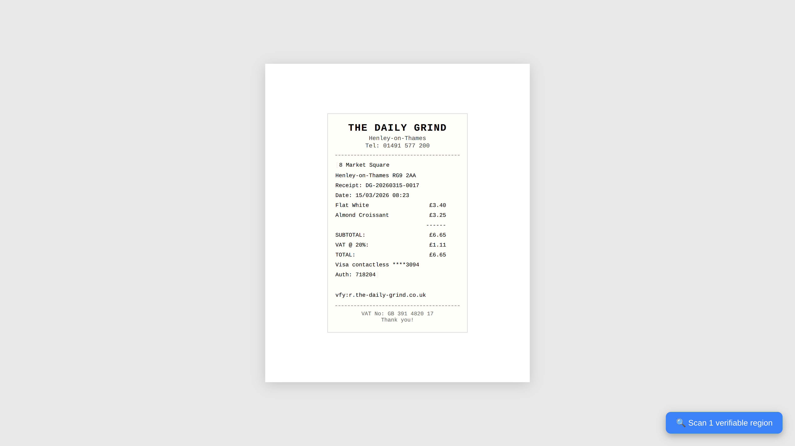
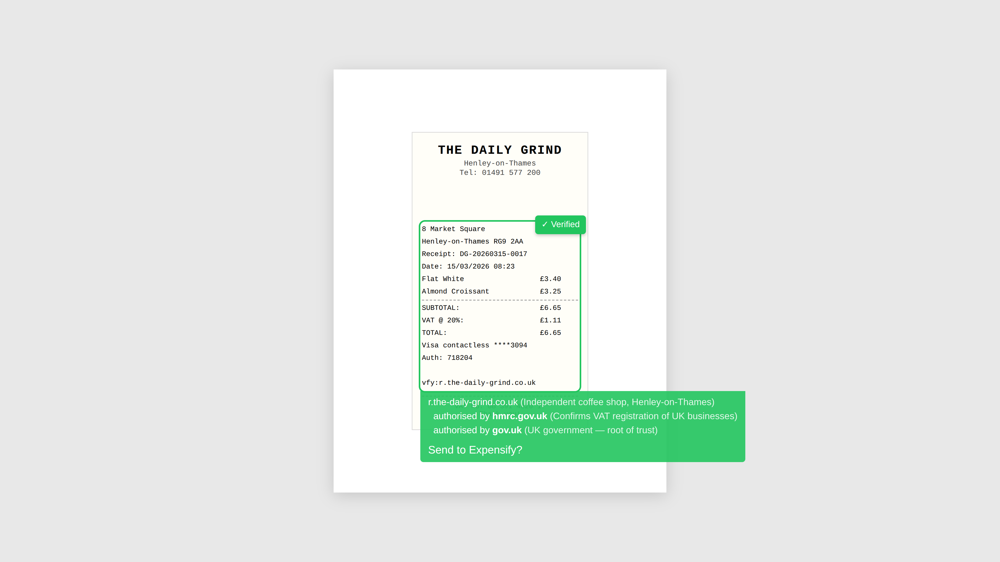
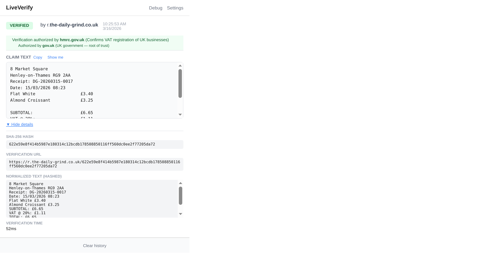
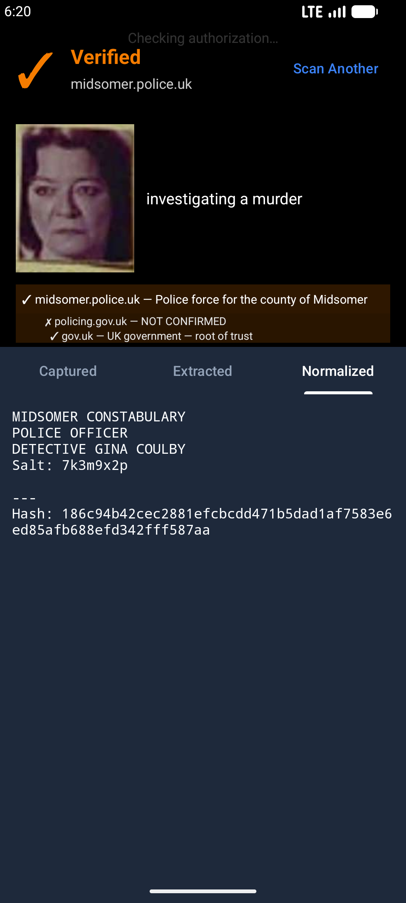
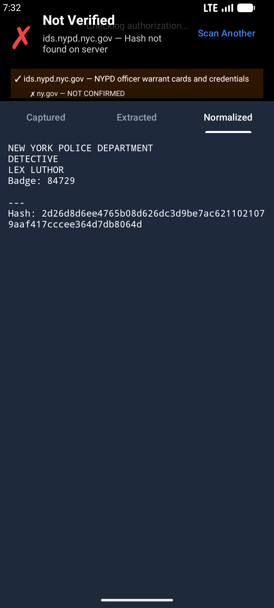
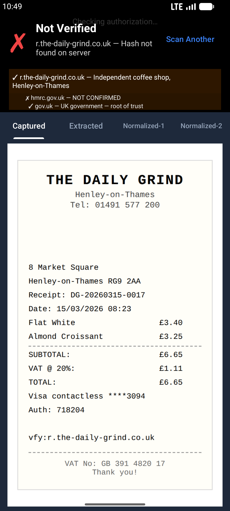
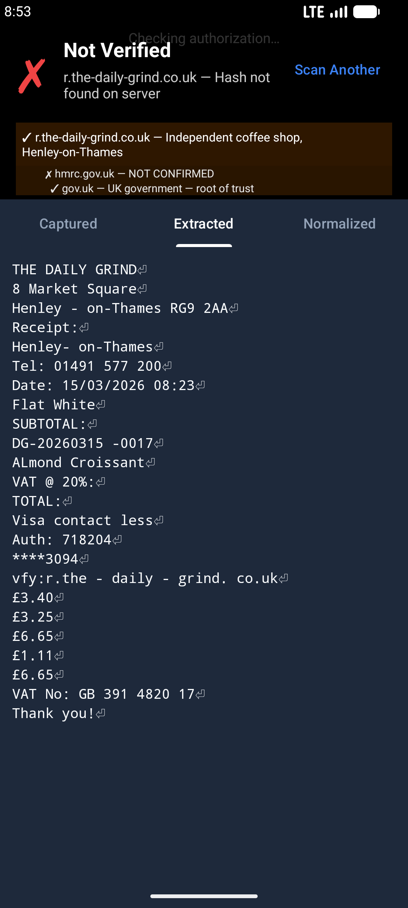
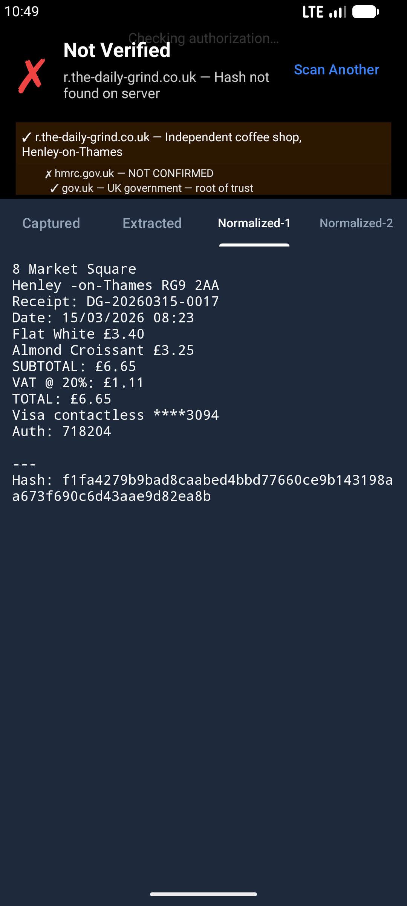

Don't just trust. Verify.
Verify any document against its source.
An open standard: select or snap the text, and a SHA-256 lookup tells you whether the issuer stands behind it right now — no central database, no blockchain.
How it works
Documents carry a verify: line pointing at the issuer's domain, e.g.
verify:issuer.example.com/claims. Clip mode: select the text. Camera mode: snap and OCR it.
Either way, the text is normalized, hashed with SHA-256, and looked up at the issuer's URL. You decide upfront whether that domain is an authority on the claim.
Select (Clip) or snap & OCR (Camera).
Apply text normalization rules locally.
Hash the normalized text.
GET the issuer URL; 200 = status returned (OK / REVOKED / etc.), 404 = not found.
A global anti-fraud system
Taken together, the use cases describe something bigger than a single product: a global, decentralized anti-fraud system for documents and claims of every kind. It works the way the web and email do — as an open standard anyone can implement, not a service anyone signs up to.
- It's a standard, not a company. The rule is simply
text → normalize → SHA-256 → GET the issuer's domain. Any issuer can adopt it without permission, accounts, or fees. - No central database. There is no master registry of valid documents and no single operator to trust, subpoena, breach, or switch off. Nobody — including us — holds a list of who verified what.
- Under ~195 sovereign roots at the top. A trust chain terminates at whoever has actual jurisdiction over the issuer — the sovereign that could subpoena or raid them under a court order. There are fewer than 195 such national roots, one per country. Beneath each, countless issuers — a hospital, a council, an insurer, an appraisal board — run their own hash endpoints on their own domains, answering only for their claims, with the sovereign above them able to vouch for (or disown) them. A handful of intergovernmental organizations (the UN, WHO, WIPO) are roots in their own right — not because they're large, but because no single nation has jurisdiction over them: the UN headquarters in Manhattan sits on international territory no US court order can reach. The "system" is the sum of all these independent servers under a small set of sovereign roots.
- Definitively decentralized. Trust is rooted in DNS — the same globally distributed namespace that already decides that
gov.ukis the UK government andirs.govis the US tax authority. Verification inherits that. - Each country runs its own trust chain. Each issuer endpoint names the URL of the authority that endorses it, and a verifier walks those links upward to a national root — e.g.
law-society.org.uk/v/… → gov.uk/verifiers/…, or a US state board→ asc.gov/v/…. The chain is built from these declared endorsement URLs, not from domain structure: a multinational'suk.andus.endpoints can point at entirely different national authorities. Jurisdictions keep their own authorities; nothing is centralized across borders, and no country depends on another's infrastructure. - Human in the loop. Verification and human judgement happen together, not in sequence. The machine does the maths — normalize, hash, look up — and the person weighs the result: “it came back verified, the issuer's domain (
gmc-uk.org) is one I accept, and the endorsement chain makes sense — so I'll trust this, for now.” Equally, the human is the one who balks at “verified, but bydjwgwbdss.com, with no chain behind it — I've no basis to trust that domain on its own.” A green tick is an input to a human decision, not the decision itself — and because issuers can revoke, that trust is only ever for this moment.
This is not a blockchain. There is no ledger, no token, no mining, no consensus network, and no shared global state. A verification is a plain HTTPS lookup against the issuer's own server, answered live — which is exactly why claims can be revoked the instant an issuer changes its mind. A blockchain's permanence is the opposite of what fraud-fighting needs; the authority you trust is a domain name, not a chain.
Roadmap
Two parallel tracks: client-side reach (where verification happens) and issuer-side adoption (whose claims get verified).
Client side — where verification happens
Issuer side — whose claims get verified
What problems does this solve?
Fraud, safety, security, compliance, authenticity — unverified documents cause harm across every sector. We've mapped the landscape:
What "Verified" means (and doesn't)
- Verified means: the domain in the
verify:line currently attests to the hash for the extracted text above it. - It is not "ground truth": the issuer can be wrong, malicious, or out-of-date.
- The human decides whether that domain is an authority for the claim in question.
- Look out for lookalike/typosquatted domains: while much of verification is automated the domain should be shown prominently for humans to judge or not as part of a "trust or don't trust" decision.
Verifications are revocable
Revocation is part of trust. Issuers can update or withdraw claims over time, so the result reflects what they stand behind today.
Some issuers may return an operational instruction, e.g. Stolen ID — please retain/cut in half and contact https://example.com/stolen_and_found quoting reference 283762..
Simulated integration tests
Screenshots captured by Playwright during automated tests against simulated authority chains in Docker. All organisations and people are fictitious. The Chrome extension is being itself or simulating something built-in to Outlook, Adobe or operating systems.
Clip mode (browser extension)
Bank statement (James, FDIC/Treasury chain)


OFSI sanctions licence (UK gov chain)


Pub receipt (Red Lion, HMRC VAT chain)


Coffee shop receipt (The Daily Grind, HMRC VAT chain)



Scottish solicitor practising certificate (Law Society → gov.scot)


Scottish solicitors firm registration


Sanctions screening attestation (FCA chain)


Camera mode
Police ID verified (Gina Dallimore, Midsomer police)


Fake police ID rejected (Lex Luthor, NYPD)


Police ID verified (Gina, Android emulator zoomed in)



Fake police ID rejected (Lex, Android emulator zoomed in)



Coffee shop receipt OCR (The Daily Grind, Android emulator) — not yet passing



Hash lookup fails due to Google ML Kit OCR errors: Henley -on-Thames (spurious space around hyphen),
TOTAL : (space before colon). Row stitching and iterative blank-line candidate search work correctly —
the remaining gap is OCR character accuracy. Apple Vision on iOS gets these right.
Real peer reference (hash live on issuer's personal website)
Privacy model
Text normalization + SHA-256 happen on-device (Clip mode never sends your text anywhere; Camera mode runs OCR on-device too). The only network step is a hash lookup. The science of one-way hashes is explained at one-way-hash.html, and we go into the rest of the guarantees in the Privacy Declaration.